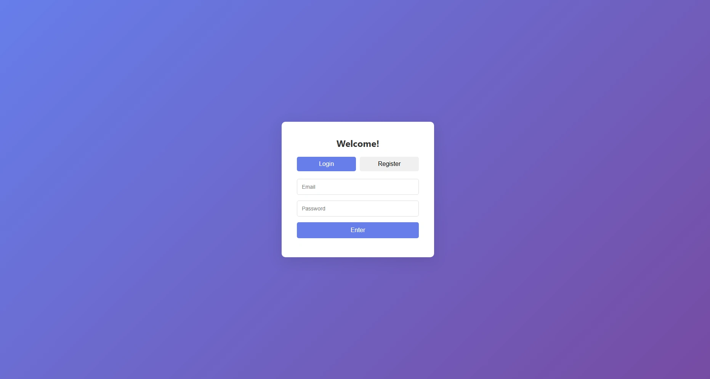
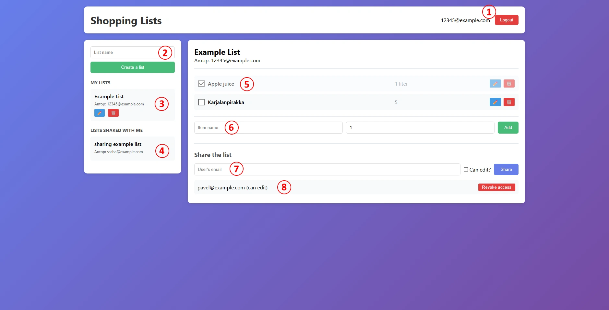
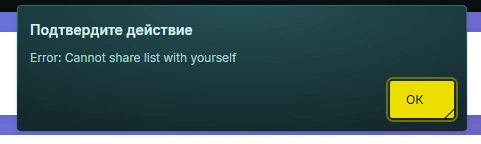
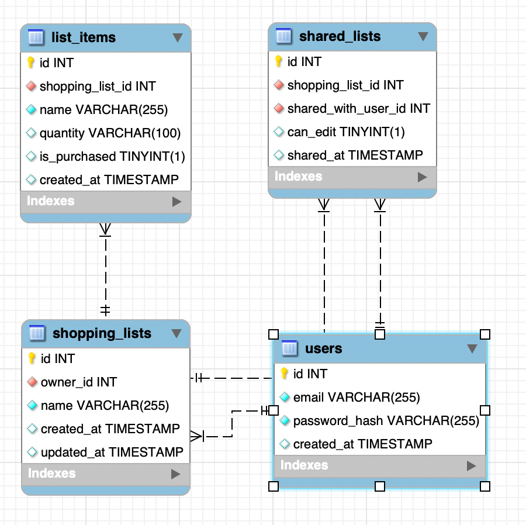
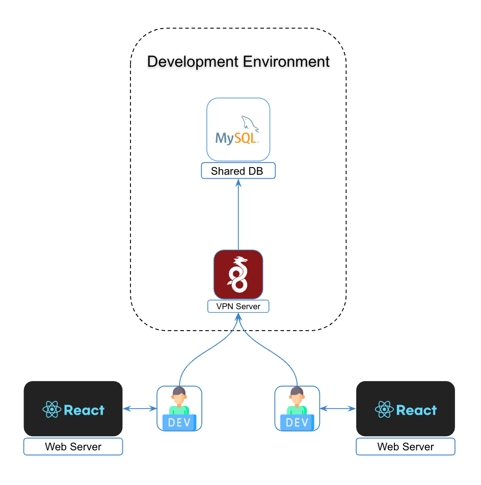
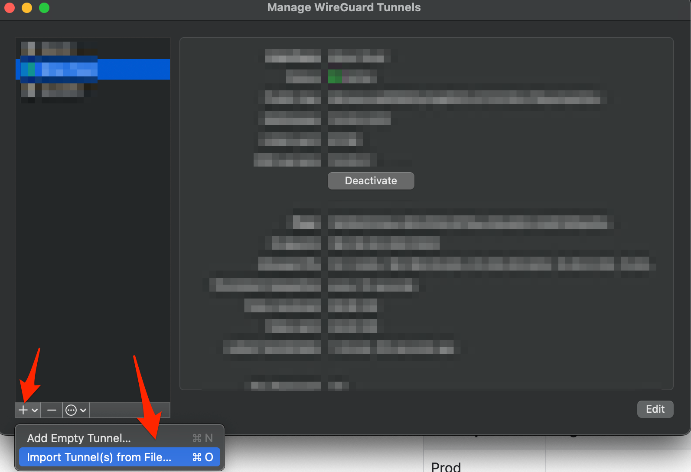
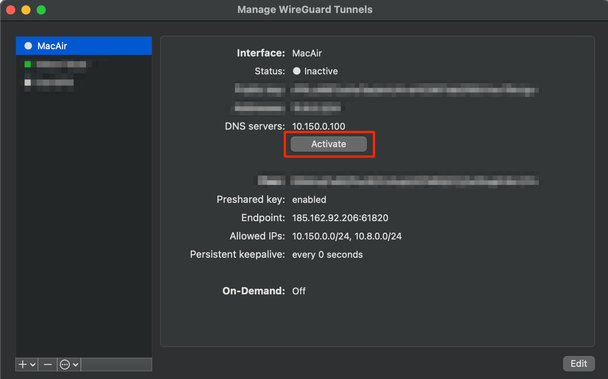

Shared Shopping Lists
A collaborative web application for creating, managing, and sharing grocery lists across devices and users.
User Guide
This guide documents all functionality of the Shared Shopping Lists web application. The interface is designed to be intuitive, providing a streamlined experience for creating, editing, and sharing grocery lists across devices.
Login & Registration
As you open the app, you will be met with a login/registration screen. It prompts the user to enter a login and a password to log in, or to switch to the Register mode to register. Once the user registers, they would be able to login using the same email and password. There are no confirmation emails, and the passwords are stored in hash to prevent basic security issues.

Login / Registration screen
Main Application
After a successful login you land on the main application screen:

Main application screen — numbered callouts described below
- User email & logout button. Displays the email of the currently logged-in user. Clicking Logout ends the session and returns you to the login screen.
- List creation field. The user can enter a name of a new list. By then clicking the “Create a list” button underneath, the user would be able to create a list of that name.
- Your lists. All lists you own. Click a list to open it; use the ✏️ button to rename it or 🗑️ to delete it permanently.
- Lists shared with me. Lists other users have shared with you. Click a list to view it (editing access depends on the permission granted by the owner).
- Items in the selected list. The user can change the status of the item by clicking the checkbox on the left, edit the name and amount of the item by clicking the ✏️, button, and deleting the item off the list with 🗑️. Purchased items are visually struck through.
- Item creation field. Enter a name and an optional quantity (free text is used instead of numeric values, supporting amounts like "1 kg", "a dozen", etc). Click Add or press Enter. This section is hidden when viewing a shared list without edit access.
- List sharing field. Enter another user's email address, optionally check Can edit?, and click Share. The section is hidden for shared lists (only owners can see the section).
- Users with access. Lists every collaborator and their permission level. Click Revoke access to remove a user. The section is hidden for shared lists (only owners can see the section).
Error Notifications
Both errors and disallowed operations (such as sharing a list with its own owner) — trigger a standard browser alert notification.

Example browser error notification
Frontend
The frontend is a single-page application (SPA) built with no frameworks or
build tools. It communicates with the REST backend via the Fetch API, stores
a JWT in localStorage, and dynamically renders all UI from plain JavaScript.
Two views exist: the Auth Section and the Main App.
File Structure
├── index.html
├── app.js
└── styles.css
The HTML file defines two top-level regions toggled by authentication state:
└── .auth-container
├── #loginForm # Email + password → login
└── #registerForm # Email + password → register
#mainApp # Shown after successful auth
├── .sidebar # List creation + list browser
└── .main-content # Active list view, items, share panel
Application State
Three module-level variables manage runtime state:
| Variable | Type | Description |
|---|---|---|
| currentToken | string | null | JWT retrieved from localStorage on page load. |
| currentUser | { id, email } | null | Decoded user object containing id and email. |
| currentListId | number | null | ID of the currently selected shopping list. |
On page load, if a token exists in localStorage, the app decodes it with
atob, restores currentUser, and transitions directly to the
main view — skipping the auth screen.
Core Helper — apiCall(endpoint, options)
A centralised async wrapper around fetch used by every
backend-communicating function. It automatically attaches
Content-Type: application/json and the
Authorization: Bearer <token> header, calls logout()
on a 401 Unauthorized response, and re-throws the server's
error field for non-ok responses. All requests target
http://localhost:3000/api.
Authentication
| Function | Description |
|---|---|
| register(email, password) | POSTs to /auth/register. On success, stores the JWT and transitions to the main app. Errors appear in #registerError. |
| login(email, password) | POSTs to /auth/login. Same flow as register; errors written to #loginError. |
| logout() | Clears all state, removes the token from localStorage, shows the auth screen, and resets all input fields. |
List Management
| Function | Description |
|---|---|
| loadLists() | Fetches all lists from GET /lists and passes ownedLists and sharedLists arrays to displayLists(). |
| displayLists(ownedLists, sharedLists) | Clears and re-renders the #ownedLists and #sharedLists sidebar containers. |
| createListElement(list, role) | Builds a .list-item div; renders ✏️ and 🗑️ buttons only when role === 'owner'. |
| createList(name) | POSTs to POST /lists, then reloads the sidebar. |
| selectList(listId) | Sets currentListId, loads items and shared users, updates sidebar highlight, and shows #shareSection for owners only. |
| editList(listId, currentName) | Prompts for a new name via window.prompt, then sends PUT /lists/:id and reloads the view. |
| deleteList(listId) | Confirms deletion, sends DELETE /lists/:id. Clears content area if the deleted list was selected. |
| getListInfo(listId) | Fetches all lists and returns the single matching object. Used internally to determine the current user's role. |
Item Management
| Function | Description |
|---|---|
| loadListItems(listId) | Fetches items from GET /lists/:id/items, renders them, and updates the #selectedListInfo header. |
| displayItems(items) | Clears and re-renders #listItems. Purchased items receive the purchased CSS class. |
| addItem(name, quantity) | Validates name is non-empty, POSTs to POST /items, reloads the list. |
| togglePurchased(itemId, isPurchased) | Sends PUT /items/:id with { is_purchased: 0|1 } and reloads the list. Exposed on window. |
| editItem(itemId, currentName, currentQuantity) | Renders a modal overlay with name and quantity inputs. Saves with PUT /items/:id. Exposed on window. |
| deleteItem(itemId) | Confirms deletion, sends DELETE /items/:id, reloads the list. Exposed on window. |
Sharing
| Function | Description |
|---|---|
| shareList(email, canEdit) | Validates email, POSTs { shopping_list_id, email, can_edit } to POST /share, reloads collaborator list. |
| loadSharedUsers(listId) | Fetches collaborators from GET /share/:listId and passes them to displaySharedUsers(). |
| displaySharedUsers(users) | Renders each collaborator in #sharedUsersList with email, permission level, and a revoke button. |
| removeShare(userId) | Confirms, sends DELETE /share/:listId/:userId, reloads the collaborator list. Exposed on window. |
UI Helpers & Event Listeners
| Function | Description |
|---|---|
| showMainApp() | Hides #authSection, shows #mainApp, sets the #userEmail display text. |
| escapeHtml(text) | Sanitises strings before innerHTML insertion via a temporary div's textContent, preventing XSS. |
All static interactions are wired via addEventListener at the bottom of
app.js. Inline onclick attributes appear only on dynamically
generated list and item rows.
| Element | Event | Action |
|---|---|---|
| #loginBtn | click | Calls login() |
| #registerBtn | click | Calls register() |
| #logoutBtn | click | Calls logout() |
| #createListBtn | click | Calls createList() |
| #addItemBtn | click | Calls addItem() |
| #shareBtn | click | Calls shareList() |
| #newListName | keypress | Calls createList() on Enter |
| #newItemName / #newItemQuantity / #shareEmail | keypress | Calls respective function on Enter |
| .tab-btn (all) | click | Switches the active auth form tab |
Backend
The backend is a modular Express.js application that separates routing, database connectivity, and security middleware into distinct files.
File Structure
├── db.js # Database configuration: MySQL pool connection
├── middleware/
│ └── auth.js # JWT Authentication middleware
├── routes/
│ ├── auth.js # User registration and login handlers
│ ├── lists.js # Shopping list management (CRUD and item fetching)
│ ├── items.js # Individual item management within lists
│ └── share.js # Collaborative features (sharing lists with other users)
└── .env # Environment variables (DB credentials, JWT secret)
Authentication & Security
- Password Hashing: Uses
bcryptjsto hash passwords before storing them in the database. - JWT Issuance: Upon successful login or registration, a JSON Web Token is generated with a 7-day validity period.
- Request Protection: The
authenticateTokenmiddleware verifies theAuthorization: Bearer <token>header on all protected routes.
Permission System
The API implements a tiered permission model for collaborative shopping:
- Read list
- Rename / delete list
- Manage items
- Share / unshare
can_edit = 1- Add, update, delete items
- Rename the list
can_edit = 0- View the list
- Toggle
is_purchased - Cannot delete items or edit details
API Reference
Auth Module — /api/auth
| Method | Endpoint | Description |
|---|---|---|
| POST | /register | Creates a new user. Body: { email, password }. |
| POST | /login | Authenticates user. Returns JWT and user object. |
Lists Module — /api/lists
| Method | Endpoint | Description |
|---|---|---|
| GET | / | Retrieves all lists owned by or shared with the user. |
| POST | / | Creates a new list. Body: { name }. |
| PUT | /:id | Renames a list (Owner or Editor only). |
| DELETE | /:id | Deletes a list (Owner only). |
| GET | /:id/items | Fetches all items belonging to a specific list. |
Items Module — /api/items
| Method | Endpoint | Description |
|---|---|---|
| POST | / | Adds item to list. Body: { shopping_list_id, name, quantity }. |
| PUT | /:id | Updates item (name, quantity, or is_purchased). |
| DELETE | /:id | Removes item from list. |
Sharing Module — /api/share
| Method | Endpoint | Description |
|---|---|---|
| POST | / | Shares a list. Body: { shopping_list_id, email, can_edit }. |
| GET | /:listId | Returns users the shopping list is shared with. |
| DELETE | /:listId/:userId | Revokes access for a specific user. |
Database
The application uses a MySQL relational database comprised of four tables. Below is the EER diagram followed by descriptions of each table and their relationships.
EER Diagram

Entity-Relationship diagram of the database schema
Tables
users
| Field | Type | Description |
|---|---|---|
| id | INT | Primary key. Auto-incremented unique identifier. |
| VARCHAR(255) | The user's email address. Used as login credential; must be unique. | |
| password_hash | VARCHAR(255) | bcrypt hash of the user's password. Plaintext is never stored. |
| created_at | TIMESTAMP | Timestamp of account creation. |
shopping_lists
Represents a shopping list owned by a user.
| Field | Type | Description |
|---|---|---|
| id | INT | Primary key. Auto-incremented unique identifier. |
| owner_id | INT | Foreign key → users.id. The user who owns the list. |
| name | VARCHAR(255) | Display name of the shopping list. |
| created_at | TIMESTAMP | Timestamp of list creation. |
| updated_at | TIMESTAMP | Timestamp of the most recent update to the list record. |
list_items
Represents an individual item within a shopping list.
| Field | Type | Description |
|---|---|---|
| id | INT | Primary key. Auto-incremented unique identifier. |
| shopping_list_id | INT | Foreign key → shopping_lists.id. The list this item belongs to. |
| name | VARCHAR(255) | Display name of the item (e.g. "Milk", "Bread"). |
| quantity | VARCHAR(100) | Free-text quantity descriptor (e.g. "2", "1 kg", "a dozen"). Defaults to 1. |
| is_purchased | TINYINT(1) | Boolean flag. 1 = checked off; 0 = still needed. |
| created_at | TIMESTAMP | Timestamp of when the item was added. |
shared_lists
Junction table tracking which users have been granted access to lists they do not own.
| Field | Type | Description |
|---|---|---|
| id | INT | Primary key. Auto-incremented unique identifier. |
| shopping_list_id | INT | Foreign key → shopping_lists.id. The list being shared. |
| shared_with_user_id | INT | Foreign key → users.id. The user granted access. |
| can_edit | TINYINT(1) | Permission flag. 1 = editor; 0 = view-only (may only toggle is_purchased). |
| shared_at | TIMESTAMP | Timestamp of when access was granted. |
Relationships
| Relationship | Cardinality | Description |
|---|---|---|
| users → shopping_lists (owner_id) | One-to-many | A user can own many lists; each list has exactly one owner. |
| shopping_lists → list_items | One-to-many | A list can contain many items; each item belongs to one list. |
| shopping_lists → shared_lists | One-to-many | A list can be shared with multiple users via sharing records. |
| users → shared_lists (shared_with_user_id) | One-to-many | A user can appear in many sharing records across different lists. |
Development Environment
Architecture

Hybrid Local-Remote architecture overview
The environment uses a Hybrid Local-Remote setup. Application logic (web server / React) runs on each developer's local machine for maximum performance, while the data persistence layer is centralised to ensure consistency across the team.
Infrastructure Components
- Local Environment: Individual workstations running the application stack (React, Node.js, etc.).
- VPN Gateway: A secure WireGuard entry point that bridges the local machine to the private development network.
- Remote Dev Environment: A containerised or cloud-based environment hosting the Shared MySQL database.
Connectivity & Access
To interact with shared resources:
- VPN Connection: Connect via the WireGuard VPN Server. This assigns your local machine an internal IP within the Development Environment subnet.
- Database Access: Once connected, the Shared DB is reachable via its internal address (e.g.
dev-db.internalor a private IP).
Development Workflow
- Local Setup: Clone the repository and install dependencies locally.
- Configuration: Update your local
.envfile to point the database host at the Shared DB address. - Start Services: Run
npm start. The app serves the UI fromlocalhostbut persists data to the remote MySQL instance. - Data Synchronisation: Since the DB is shared, any migrations or data changes are immediately visible to the entire team.
Git Repository
VPN Setup — WireGuard
- Download and install WireGuard from wireguard.com/install.
-
Import the tunnel configuration from file.

-
Activate the tunnel.

User Stories
Story 1 — List Synchronisation Across Devices
The user wants a digital shopping list that is accessible from both their phone and PC. The default Notes app on most phones doesn't synchronise across devices. Cross-platform alternatives (Obsidian, Google Docs) either require a subscription, server setup, or aren't focused on simple list-keeping.
With this web application, synchronisation is automatic — the user logs into the same account from any device and their lists are immediately available with no additional setup.
Story 2 — Shared Lists Between Roommates
The user shares a household with roommates and currently coordinates shopping lists via a messenger chat. This approach is unreliable: messages get lost among other conversations and it becomes difficult to track which items have already been purchased, leading to duplicates or missed items.
The application resolves both issues. It is dedicated solely to shopping list management, and shared lists keep purchase status synchronised in real time for all collaborators — so every roommate always sees what has been bought and what still needs to be picked up.
Kernel Analysis
The following Kernel Analysis tracks project progress across the three SEMAT areas: Customer, Solution, and Endeavor.
Area: Customer
State 1: Recognized
- Stakeholder groups identified: people who want to organize their grocery lists and share them with their families/roommates.
- Key stakeholder groups represented: both of the developers, as well as the roommates of one of the developers, wish to use the application, therefore both of the developers would represent the key stakeholder group.
- Responsibilities defined: We will be using the Kanban work model, so we will both be able to take on the required tasks, and we have established that Oleksandr will be focusing more on the documentation of the application.
State 2: Represented
- Responsibilities agreed: Both of the developers representing the key stakeholder group have agreed to take on the tasks written on the Kanban board.
- Responsibilities authorized: Both of the developers representing the key stakeholder group have agreed to add any required tasks to the Kanban board.
- Collaboration approach agreed: Telegram chat and Telegram calls are used for communication, and a Jira Kanban board is used to track tasks.
- Way of working supported and respected: Since the key stakeholder group is just the target demographic, it will not interrupt or go against the agreed way of working.
State 3: Involved
- Representatives assist the team: When we get to testing, we will test the application both ourselves and on the roommates of one of the developers as representatives of the key stakeholder group.
- Timely feedback and decisions provided: Since all the testing parties are either the developers themselves or the roommates of one of the developers, there is no reason for any feedback delays, so it will not block progress.
- Changes promptly communicated: Any changes to the plans and scope will be discussed between the developers.
State 4: In Agreement
- Minimal expectations agreed: The application will run in a browser, will have a way to create grocery lists, and share grocery lists between users.
- Rep's happy with involvement: The key stakeholder group is content with their level of oversight.
- Rep's input valued: We will take into account and consider all of the feedback that we would receive during testing.
- Team's input valued: We will respect and take into account each other's ideas and thoughts regarding the project.
- Priorities clear & perspectives balances: We understand that the functionality listed in minimal expectations and the reliability of that functionality is our top priority, and the UI should first and foremost serve the functionality rather than be the main focus.
State 5: Satisfied for Deployment
- Stakeholder feedback provided: Both developers are satisfied with the application in its current state.
- System ready for deployment: The documentation (GitHub Pages) is live, the system is fully functional and deployable.
State 6: Satisfied in Use
- Feedback on system use available: Application tested in an actual shopping plan with satisfactory results.
- System meets expectations: The application fully covers its functional and non-functional requirements.
State 1: Identified
- Idea behind opportunity identified: The core concept is clearly stated - groceries list sharing web application.
- At least one investing stakeholder interested: We, as the developers and stakeholders, invest time into the project.
- Other stakeholders identified: Potential users might use it to help them organize their grocery lists.
State 2: Solution Needed
- Solution identified: Building a web application.
- Stakeholders' needs established: The developers need to create the project to finish the study project and to use it themselves.
- Problems and root causes identified: We need to make a study project, and we as users want to have a convenient grocery list management application.
- Need for a solution confirmed: We really do need to make a study project, and we as users like the idea of sharing our grocery lists with our families/roommates.
- At least one solution proposed: Pavel has made the development plan as a part of the project feasibility analysis.
State 3: Value Established
- Opportunity value qualified: Successfully finishing the study project.
- Solution impact understood: The study project will be finished and we will have a solution for grocery list organization.
- System value understood: A usable and feature-complete grocery list web application.
- Success criteria clear: Finishing the project before 16 May 2026.
- Outcomes clear and quantified: The application will be usable and feature-complete.
State 4: Viable
- Solution outlined: Pavel created the project plan as part of the feasibility analysis and diagrams for service structure, development architecture structure, and database structure.
- Solution possible within constraints: Two people can finish this in a few weeks.
- Risks acceptable & manageable: Oleksandr isn't experienced with web development, but Pavel is.
- Solution profitable: The time invested is worth the study project result.
- Reasons to develop solution understood: To do the study project and to get a grocery list application for ourselves.
- Pursuit viable: The development has begun.
State 5: Addressed
- Opportunity addressed: The program is developed and functional.
- Solution worth deploying: The program is feature-complete and polished enough to use.
- Stakeholders satisfied: The developers are content with the current state of the app, since it is both usable for personal use and complete as a study project.
State 6: Benefit Accrued
- Solution accures benefits: The study project is complete, and the application is fit for personal use.
- ROI acceptable: The study project is done on time, so it will likely be graded well.
Area: Solution
State 1: Conceived
- Stakeholders agree system is to be produced: Both developers have agreed to produce the application.
- Users identified: people who want to organize their grocery lists and share them with their families/roommates.
- Funding stakeholders identified: We, as the developers and stakeholders, invest time into the project, and we don't have financial funding since this is a study project.
- Opportunity clear: To do the study project and to get a grocery list application for ourselves.
State 2: Bounded
- Development stakeholders identified: Pavel and Oleksandr.
- System purpose agreed: A web application for creating and sharing grocery lists.
- System success clear: A usable and feature-complete grocery list web application.
- Shared solution understanding exists: Both devs agree on the service architecture and database structure.
- Requirement's format agreed: We will use Kanban board in Jira.
- Prioritization scheme clear: Kanban.
- Constraints identified & considered: Must run on modern phones and PCs in the browser.
- Assumptions clear: Assuming people do need to share their grocery lists and do not have an existing solution for that.
State 3: Coherent
- Requirements shared: Pavel has created the project plan as part of the feasibility analysis.
- Requirements' origin clear: The project plan strictly adheres to the minimal feature list for the application.
- Rationale clear: The logic behind features is documented in the feasibility analysis.
- Conflicts addressed: Choosing sharing lists to existing accounts rather than sending email list invites.
- Essential characteristics clear: Create list - Edit list - Share list - Track item status.
- Key usage scenarios explained: Create list - Edit list - Share list - Track item status.
- Priorities clear: The database and backend are done before the frontend.
- Impact understood: Adding any additional features extends the scope and poses a threat to the study project deadline.
- Team knows & agrees on what to deliver: We both agree on what the features are.
State 4: Acceptable
- Acceptable solution described: Pavel has created the project plan as part of the feasibility analysis.
- Change under control: Any ideas to expand the project would be discussed among the development team (and likely declined to keep the scope of the study project low enough).
- Value to be realized clear: The study project will allow us to pass the course, and we will get a grocery list management application for our own use.
- Clear how opportunity addressed: The features are required to cover the base functionality of the app.
- Testable: All functionality works as intended.
State 5: Addressed
- Enough addressed to be acceptable: All functionality works as intended.
- Requirements and system match: All planned functionality is fully developed and works as intended.
- Value realized clear: The study project is finished, and the app is fit for personal use.
- System worth making operational: The app is ready to be deployed in its current state.
State 6: Fulfilled
- Stakeholders accept requirements: The developers agree that the application is feature complete.
- No hindering requirements: The lack of additional functionality that was outside the scope of the project, such as notifications, don't hinder the user experience.
- Requirements fully satisfied: The application is feature complete and deployable.
State 1: Architecture Selected
- Architecture selection criteria agreed: We need architecture that would support the web frontend+backend structure.
- HW Platforms identified: Web application, therefore modern smartphones and PCs.
- Technologies selected: MySQL+NodeJS+React
- System boundary known: We don't send any emails for sharing so as not to extend the scope, rather just share the lists to existing accounts.
- Decisions on system organization made: Backend and frontend will be handled separately with NodeJS and React respectively.
- Buy, build, reuse decisions made: We will use MySQL, NodeJS, and React, which are existing available technologies.
- Key technical risks agreed to: Some organizational work might be a bit unsynchronized, so we will use Kanban workflow to mitigate that.
State 2: Demonstrable
- Key architectural characteristics demonstrated: Database successfully initialized, backend successfully connects to it.
- System exercised and performance measured: Backend tests passed using Bruno within reasonable time.
- Critical HW configurations demonstrated: The application works on a PC browser.
- Critical interfaces demonstrated: Backend is fully functional and is testable via Bruno.
- Integration with environment demonstrated: Frontend launches.
- Architecture accepted as fit-for-purpose: A web application is confirmed to be suitable for the functionality.
State 3: Usable
- System can be operated: A user can register, log in, create a list, add items, share the list with another user (as editor or viewer).
- System functionality tested, system performance acceptable, defects level acceptable: The application was tested by both developers and external testers (roommates) using real shopping scenarios on PC browsers. Defects at acceptable level.
- System fully documented: Yes, GitHub Pages.
- Release content known: Yes, we agreed upon the list of features, and we will not expand that.
- Added value clear: The study project will be made, and the application will be available for use.
State 4: Ready
- User documentation ready: Yes, GitHub Pages.
- System accepted as fit-for-purpose: Yes, it passes both technical and practical tests.
- Stakeholders want the system: The developers want to use the system themselves.
- Operational support in place: The Telegram chat is still a viable option for communication even after the project.
State 5: Operational
- System available for use, system live: The system is both publicly available on GitHub and is currently deployed.
- Agreed service levels are supported: The application is available on GitHub, and people can use it.
Area: Endeavor
State 1: Seeded
- Mission defined: Build a web application for making and sharing grocery lists.
- Constraints known and defined: This is a study project, so we will not have any funding, and the project development may not be a priority at some points for both developers.
- Growth mechanisms in place: We can reach out to other students, the teacher, or our aquaintances in case we need new members.
- Composition defined: 2 developers (1 technical-focused, 1 documentation-focused)
- Responsibilities outlined: We both take on tasks at the Kanban board, Pavel focuses on the technical tasks more due to larger experience in that, Oleksandr focuses more on the documentation-related tasks.
- Required commitment level clear: Do the tasks listed at the Kanban board when possible.
- Required competencies identified: MySQL, Javascript.
- Size determined: 2 people.
- Governance rules defined: Pavel has the last say on all technical aspects, otherwise equal governance.
- Leadership model selected: Flat hierarchy.
State 2: Formed
- Enough members recruited: Yes, Pavel and Oleksandr are on board.
- Roles understood: Oleksandr understands that he will be taking on most of the documentation, Pavel understands that he is much more experienced with web development.
- How to work understood: We have GitHub to push any changes to, and Telegram to share any documents with.
- Members introduced. The team had a kickoff call.
- Individual responsibilities accepted: Oleksandr accepts that he will be taking on most of the documentation, Pavel accepts that he is much more experienced with web development.
- Members accepting work: We took on some tickets, and some tickets moved to "In Progress" and "Done".
- External collaborators identified: The possibility of outside help is known, although it doesn't seem needed so far.
- Communication mechanisms defined: Telegram for chat and calls, Jira for tasks.
- Members commit to team: Both agree to start the project.
State 3: Collaborating
- Works as one unit: The workflow is progressing without notable delays on either one of developer's ends.
- Communication open and honest: Any issues and tasks are discussed on calls.
- Focused on mission: The team prioritizes the project as a study project, and the work is progressing.
- Members know each other: We do, in fact, know each other and recognize each other's capabilities.
State 4: Performing
- Consistently meeting commitments: The Jira Kanban board tasks are completed in a timely manner.
- Continuously adapting to change: The working structure is flexible enough to accommodate changes during the development.
- Addresses problems: Any workflow problems are sorted out together with communication.
- Rework and backtracking minimized: The program is planned and documented well, so it rarely needs to be reworked.
- Waste continuously eliminated: I'm not entirely sure if this is applicable to our project, since we don't have many tasks to automate.
State 5: Adjourned
- Responsibilities fulfilled: The system is fully developed and both publicly available on GitHub and is currently deployed.
- Members available to other teams: Both developers are available for other projects.
- Mission concluded: The application development officially ends.
State 1: Initiated
- Required result clear: A functional web application with grocery list creation and sharing functionality.
- Constraints clear: Must be finished until May 16th.
- Funding stakeholders known: Funding is nonexistent since this is a study project.
- Initiator identified: Pavel pitched the application idea and core functionality.
- Accepting stakeholders known: The developers and testers would accept the application by the end of its development.
- Source of funding clear: The funding and its source don't exist.
- Priority clear: A high priority study project.
State 2: Prepared
- Commitment made: The kickoff call made.
- Cost and effort estimated: Roughly a few full days of work.
- Resource availability understood: MySQL, NodeJS and React are available to use.
- Risk exposure understood: Oleksandr isn't experienced with web development.
- Acceptance criteria established: A grocery list can be made and shared to another user.
- Sufficiently broken down to start: The project initiation, such as tasks for the initial database design, database deployment, etc, are finished after being broken down into smaller tasks.
- Tasks identified and prioritized: Kanban board established.
- Credible plan in place: The database design is done, and we can work off of it.
- Funding in place: The funding doesn't exist, so we can assume it is already taken care of.
- At least one member ready: The Github repository was set up.
- Integration points defined: We will both have access to the database using a VPN connection.
State 3: Started
- Development started: First commit pushed to GitHub.
- Progress monitored: The Kanban board is active.
- Definition of done in place: A functional web application with grocery list creation and sharing functionality.
- Tasks being progressed: Tasks move from "To Do" to "In Progress" and to "Done".
State 4: Under Control
- Tasks being completed: Tasks move to "Done".
- Other state conditions satisfied.
State 5: Concluded
- Only admin tasks left: Yes, only submitting the study project left.
- Results achieved: App fully developed.
- Resulting system getting accepted: The application is fit for purpose and was tested by the developers for personal use.
State 1: Principles Established
- Team actively supports principles: Everyone agrees to peer-review each other's progress.
- Stakeholders agree with principles: The key stakeholder is the target demographic, so it is content with our way of work.
- Tool needs agreed: Git, Jira, Telegram and the IDE of choice of either developer.
- Approach recommended: Kanban
- Operational contect understood: Remote asynchronous work.
- Practice & tool constraints known: We will not exceed the free limits of GitHub.
State 2: Foundation Established
- State conditions satisfied.
State 3: In Use
- State conditions satisfied.
State 4: In Place
- Used by whole team, inspected and adapted by whole team: The whole team accepted Jira, Confluence, GitHub, MySQL Workbench, Bruno, VS Code and Clockify. Some of these instruments, such as Bruno, were proposed during the project work.
- Accessible to whole team: VPN connection established for access to the database, otherwise the project is available through GitHub.
State 5: Working Well
- Predictable progress being made: Jira tickets are consistently being worked on and completed.
- Practices naturally applied: The development is a focused activity for both developers.
- Tools naturally support way-of-working: The tools we're using are well-fit for purpose and provide all needed features.
- Continually tuned: The workflow is optimized.
State 6: Retired
- No longer in use: Development process stopped.
- Lessons learned shared: Development is documented.
Project Feasibility Analysis
1. Executive Summary
Concept: a cloud-based service for creating shared shopping lists that can be shared among family members or group members.
Problem: existing note-taking and list-making apps (such as Google Keep and Reminders) do not offer a convenient way to track who has bought what, provide status updates, or enable collaborative editing.
Solution: a minimalist MVP with shared lists, purchase check-off, invitation-only access.
2. Solution Description (MVP)
| Feature | Value to User | Build Effort | Priority |
|---|---|---|---|
| Creating and editing a list | Basic purchasing management | Low | Must |
| Invitation by email | Shared use | Medium | Must |
| 'Bought' mark | Transparency: who bought what | Medium | Must |
3. Technology Evaluation
Recommendation — Option A (MySQL + React + Node.js): The MVP requires a rapid time-to-market, and as the team already has experience working with this tech stack, this will enable the project to be delivered on schedule.
| Option | Pros | Cons |
|---|---|---|
| A: MySQL + React + Node.js (recommended) | Quick start, low-cost | The architecture is a little more complicated |
| B: Django + MySQL | Full control, flexibility, security | Deep knowledge of the framework is required |
4. Market & User Analysis
Target segments:
- Families with children (2–5 people) — spend €200–600 per month on groceries and want to save time.
- People living together (students, couples) — share a budget and shopping responsibilities.
- Event and excursion organisers.
User Journey: Registration → Create list → Add items → Invite participant → Participant marks 'purchased' → Participants can track the status of their purchases.
5. Go-to-Market Strategy
| Channel | Action | Expected Impact |
|---|---|---|
| Student WhatsApp groups | Post: 'How not to forget to buy the groceries you need' | 100+ installations |
Promo: The first 200 families get three months free.
6. Team & Organisation (5 weeks)
| Role | Count | Skill Level |
|---|---|---|
| Full-stack Developer (React/Node.js) | 1 | Junior |
| Full-stack Developer (React/Node.js) | 1 | Middle |
7. Project Roadmap
| Week | Phase | Decision Gate |
|---|---|---|
| 1–2 | Planning — prototype, user stories, EER diagrams | Gate 1: The UI prototype and database structure have been approved. |
| 3 | Build — Logging in to the service and creating shopping lists | Gate 2: the ability to create a new account and make a shopping list. |
| 4 | Build — Shared access to the shopping lists and status tracking | Gate 3: The app has full functionality. |
| 5 | Testing — security | Gate 4: The test involving five families has been passed. |
9. Recommendation & Risk
Conclusion — It is technically feasible, there is a market for it, and the initial budget is minimal. It is recommended that the MVP be launched within three months.
| Risk | Probability | Impact | Countermeasure |
|---|---|---|---|
| Low viral growth | High | High | Add 'Invite a friend – get a month's Premium membership' |
| Users are not upgrading to a paid plan | Medium | Medium | Freemium: 2 lists for free → unlimited for €2 |
| Competition from note-taking apps | Low | Medium | Focus on the shopping list, with further expansion of specific functionality |
Project Requirements
The following tables define the functional and non-functional requirements agreed upon for the Shared Shopping Lists application. Functional requirements are grouped by feature area; non-functional requirements are categorised by quality attribute.
Functional Requirements
Authentication
| ID | Requirement |
|---|---|
FR-01 |
The system shall allow a new user to register with a unique email address and a password. |
FR-02 |
Passwords shall never be stored in plaintext; the system shall store only a bcrypt hash. |
FR-03 |
The system shall allow a registered user to log in with their email and password and receive a JWT valid for 7 days. |
FR-04 |
The system shall automatically restore a user's session on page load if a valid JWT exists in local storage. |
FR-05 |
The system shall allow a user to log out, clearing all session state and returning them to the login screen. |
List Management
| ID | Requirement |
|---|---|
FR-06 |
An authenticated user shall be able to create a named shopping list. |
FR-07 |
A list owner or editor shall be able to rename a shopping list. |
FR-08 |
A list owner shall be able to permanently delete a shopping list and all its items. |
FR-09 |
The system shall display all lists owned by the user and all lists shared with the user in separate sidebar sections. |
Item Management
| ID | Requirement |
|---|---|
FR-10 |
An authorised user (owner or editor) shall be able to add an item to a list, specifying a name and an optional free-text quantity (e.g. "1 kg", "a dozen"). |
FR-11 |
An authorised user (owner or editor) shall be able to edit the name and quantity of an existing item. |
FR-12 |
An authorised user (owner or editor) shall be able to delete an item from a list. |
FR-13 |
Any user with access to a list (including view-only) shall be able to toggle an item's purchased status. |
FR-14 |
Items marked as purchased shall be visually displayed with a strikethrough in the list view. |
Sharing & Permissions
| ID | Requirement |
|---|---|
FR-15 |
A list owner shall be able to share their list with another registered user by entering that user's email address. |
FR-16 |
When sharing, the owner shall be able to grant either Editor access (add, edit, delete items; rename list) or Viewer access (view list; toggle purchased status only). |
FR-17 |
A list owner shall be able to view all users currently granted access to a list, along with their permission level. |
FR-18 |
A list owner shall be able to revoke another user's access to a list at any time. |
FR-19 |
The system shall prevent sharing a list with its own owner and shall notify the user if this is attempted. |
FR-20 |
Sharing controls (share panel, collaborator list) shall be hidden from users who do not own the list. |
Non-Functional Requirements
| ID | Category | Requirement |
|---|---|---|
NFR-01 |
Security | All API routes except /auth/register and /auth/login shall require a valid JWT in the Authorization: Bearer header. |
NFR-02 |
Security | The system shall return a 401 Unauthorized response for any request with a missing or invalid token, triggering automatic client-side logout. |
NFR-03 |
Compatibility | The application shall run without installation on any modern browser (Chrome, Firefox, Safari, Edge) on both desktop and mobile devices. |
NFR-04 |
Usability | The interface shall require no onboarding or tutorial; a new user shall be able to create and share a list within their first session. |
NFR-05 |
Usability | Errors and disallowed operations shall surface to the user via a browser alert notification immediately upon occurrence. |
NFR-06 |
Data Integrity | All foreign key relationships in the database shall be enforced at the database level, preventing orphaned items or shares. |
NFR-07 |
Maintainability | The backend shall be organised into separate route modules (auth, lists, items, share) with a single Express entry point, allowing features to be added or modified independently. |
NFR-08 |
Portability | The application shall require only a .env file change to point at a different database host, supporting both local and remote deployment. |